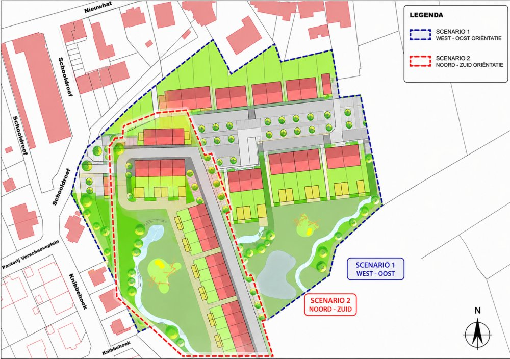

Onteigeningspoging van grond gelegen aan de Schooldreef te Alveringem.
Periode: 17 maart 2017 –-> 22 juli 2024.
Vier rechtbanken hebben geoordeeld dat deze onteigeningspoging onwettig was en is.
Het Vlaams Onteigeningsdecreet van 24 februari 2017, is sinds 1 januari 2018 in werking getreden.
1. Het onteigeningsdecreet bepaalt dat bij een onteigening een wettelijke rechtsgrond én een onteigeningsnoodzaak, moet worden aangetoond.
Het onteigeningsdecreet bepaalt dat de voorwaarden om tot een onteigening te kunnen overgaan een wettelijke/decretale rechtsgrond én het aantonen van de noodzakelijkheid (cumulatief de 3 elementen) van de onteigening, zijn.
Artikel 1 van het Eerste Aanvullend Protocol EVRM bepaalt
dat iedere natuurlijke of rechtspersoon recht heeft op het ongestoord genot van
zijn eigendom. Niemand zal zijn eigendom worden ontnomen “behalve in het
algemeen belang en onder de voorwaarden voorzien in de wet en in de algemene
beginselen van internationaal recht”.
Artikel 16 Grondwet bepaalt dat een onteigening van algemeen nut enkel kan ‘in de gevallen en op de wijze bij de wet bepaald’.
Volgens artikel 3, §2 van het Vlaams Onteigeningsdecreet van 24 februari 2017, dat verwijst naar artikel 16 Gw., is dergelijke onteigening slechts mogelijk als daartoe een uitdrukkelijke ‘wettelijke of decretale rechtsgrond’ is voorzien.
Volgens artikel 3, §3 van datzelfde decreet, dat verwijst naar artikel 1 van het Eerste Aanvullend Protocol EVRM, is een onteigening alleen mogelijk als bewezen wordt dat die ‘onteigening noodzakelijk’ is.
Voorwaarden om tot onteigening te kunnen overgaan, zijn dus een habilitatie én een onteigeningsnoodzaak.
De onteigeningsvoorwaarde van een rechtsgrond (onteigeningsdecreet artikel 3, §2) is te onderscheiden van de onteigeningsvoorwaarde van een onteigeningsnoodzaak (artikel 3, §3).
Artikel 2, §2 bepaalt dat een onteigening op basis van een specifieke rechtsgrond (als habilitatie) moet gebeuren als dat voorzien is, bv. in een ruimtelijk uitvoeringsplan dat vastlegt dat een onteigening moet gebeuren door een sociale woonmaatschappij.
Artikel 3, §3 van het Vlaams Onteigeningsdecreet van 24 februari 2017 bepaalt dat deze onteigeningsnoodzaak cumulatief betrekking moet hebben op (1) het doel van de onteigening, (2) de onteigening als middel én (3) het voorwerp van de onteigening.
(1) De noodzakelijkheid van het doel van de onteigening betekent dat het doel van de onteigening een dwingende reden van algemeen belang moet zijn.
Artikel 2.4.3, § 1, Vlaamse Codex Ruimtelijke Ordening stelt een weerlegbaar vermoeden van algemeen nut in, voor elke onteigening ter uitvoering van een ruimtelijk uitvoeringsplan. Zij stelt geen vermoeden in dat een onteigening - ter uitvoering van een ruimtelijk uitvoeringsplan - noodzakelijk is voor het realiseren van het met dat plan nagestreefde doel van algemeen nut (Cassatie Arrest C.20.0317.N).
(2) De noodzakelijkheid van de onteigening als middel betekent dat het doel alleen kan worden bereikt door onteigening en dat er, redelijkerwijze, geen alternatief is voor het gebruik van onteigeningsdwang. Een onteigening is alleen wettig wanneer blijkt dat het beoogde doel niet mogelijk is zonder onteigening. Onteigening moet het laatste redmiddel (ultimum remedium) zijn. Onteigening mag bijvoorbeeld door de overheid als middel niet misbruikt worden om goedkoop bouwgrond te verwerven.
(3) De onteigeningsnoodzaak van het voorwerp van de onteigening heeft betrekking op de vraag of het geviseerde goed, en niet een ander goed, moet onteigend worden en betreft dus ook de vraag naar de zorgvuldige afweging van alternatieven.
2. De Motiveringsplicht in onteigeningszaken wordt geregeld in artikel 28 van het Onteigeningsdecreet en door de Motiveringswet.
Artikel 28, §1, 5° Vlaams Onteigeningsdecreet: ‘na afloop van het openbaar
onderzoek stelt de onteigenende instantie binnen de termijn, vermeld in artikel 29,
al dan niet een definitief onteigeningsbesluit vast dat, op straffe van
nietigheid, de volgende elementen bevat, 5° : de omschrijving en de
motivering van de onteigeningsnoodzaak’.
De onteigenende instantie dient bij elke onteigening de vervulling van de voorwaarden op afdoende wijze te motiveren. Met andere woorden, de onteigenende instantie moet bewijzen dat aan de onteigeningsvoorwaarden (waaronder cumulatief aan de drie elementen van de onteigeningsnoodzaak) wordt voldaan.
Volgens vaste rechtspraak en rechtsleer moet de onteigenende instantie niet alleen motiveren dat het onteigeningsdoel of de reden van de onteigening noodzakelijk is, maar moet ook worden aangetoond dat de onteigening als beleidsinstrument noodzakelijk en evenredig is ten opzichte van de te realiseren doelstelling.
Deze motiveringsplicht inzake de onteigeningsnoodzaak is niet vervuld door uitsluitend te verwijzen naar de habilitatiebepaling om tot onteigening over te gaan. Wetgeving (bv. VCRO) waarin bepaald wordt in welk geval een onteigening mogelijk is, heeft per definitie een algemeen karakter. Daarentegen dient de onteigeningsnoodzaak steeds in concreto geëvalueerd te worden.
De artikelen 2 en 3 van de Motiveringswet (dd. 29 juli 1991) vereisen dat het definitief onteigeningsbesluit, als rechtshandeling met een individuele strekking, uitdrukkelijk en dus formeel gemotiveerd moet zijn (artikel 2) en op een afdoende wijze de juridische en feitelijke overwegingen moet vermelden die aan de beslissing ten grondslag liggen (artikel 3).
De formele motiveringsplicht verplicht de onteigenende overheid dus op een duidelijke manier in het onteigeningsbesluit de redenen te vermelden die geleid hebben tot het nemen van zijn beslissing, zodat een belanghebbende met kennis van zaken tegen de beslissing kan opkomen.
De materiële motiveringsplicht, als algemeen beginsel van behoorlijk bestuur, en zoals het ook in artikel 3 van de Motiveringswet wordt opgenomen, vereist bovendien dat de genomen beslissing gedragen wordt door motieven die in feite juist en in rechte aanvaardbaar zijn.
Dit betekent onder meer dat de genomen beslissing moet steunen op motieven waarvan het feitelijk bestaan zorgvuldig is vastgesteld en naar behoren is bewezen en die in rechte als verantwoording voor die beslissing in aanmerking kunnen worden genomen.
Die motieven moeten met andere woorden relevant en pertinent zijn, met de vereiste zorgvuldigheid en redelijk zijn vastgesteld.
Daarenboven bestaat de verscherpte motiveringsplicht, zoals aangehaald door de Vlaamse decreetgever in het instrumentendecreet: de motivering dient aan te tonen dat de gezamenlijke inzet van instrumenten voldoet aan de criteria van legitimiteit, billijkheid, efficiëntie en effectiviteit.
Ook het Hof van Cassatie oordeelde herhaaldelijk dat een onteigeningsbesluit de redenen moet motiveren waarom de onteigening noodzakelijk is, wat betekent “dat de motivering moet berusten op werkelijke feiten, dat uit de motivering een redelijk verband tussen de voorgenomen onteigening en het vooropgestelde doel kan worden afgeleid en dat, naar gelang van het geval, uit die motivering blijkt dat de genomen beleidsopties afgewogen worden”.
3. Rechtspraak
Raad voor Vergunningsbestwistingen (RvVb) – Vernietiging onteigeningsbesluit - Omschrijving motiveringsplicht.
Ø Arrest RvVB van 1 april 2021, met nummer RvVb-A-2021-0854, in de zaak met rolnummer 1920-RvVb-0719-A.
Ø Arrest RvVb van 13 oktober 2022, met nummer RvVb-A-2223-0120, in de zaak met rolnummer 2021-RvVb-0831-A.
Ø Arrest RvVb van 29 februari 2024, met nummer RvVb-A-2324-0504, in de zaak met rolnummer 2223-RvVb-0316-A.
Hof van Cassatie - Motiveringen
Ø Arrest Hof van Cassatie, 11 september 2003, jaargang 2003 nr. 9, p. 1635
Ø Arrest Hof van Cassatie, 7 september 2017, AR C.16.0360.N, CONC. 20170907.2
Ø Arrest Hof van Cassatie, 29 maart 2019, AR C.18.0223.N (C.18.0227.N), CONC. 20190329.2
Ø Arrest Hof van Cassatie, 12 februari 2021, AR C.20.0317.N, CONC 20210212.1N.8
Vonnissen en Arresten - Zoete & Mareels
Ø Arrest van de RvVb van 7 oktober 2021 met nummer RvVb-A-2122-0109, in de zaak met rolnummer 2021-RvVb-0355-A
Ø Vonnis van het vredegerecht Veurne, dd. 7 december 2021, rolnummer 21/A/748
Ø Vonnis van de Rechtbank van Eerste Aanleg Veurne, dd. 15 december 2022, rolnummer 22/3/A
Ø Arrest van het Hof van Cassatie, 2 mei 2024, AR C.23.0254.N
